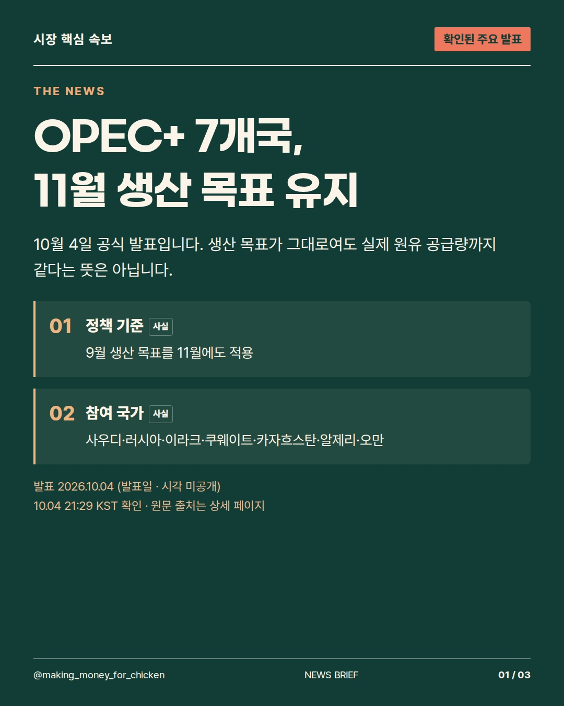
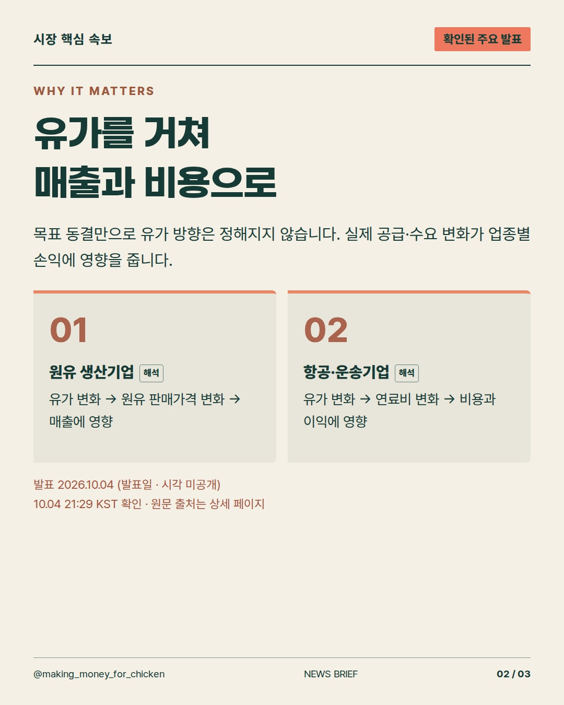
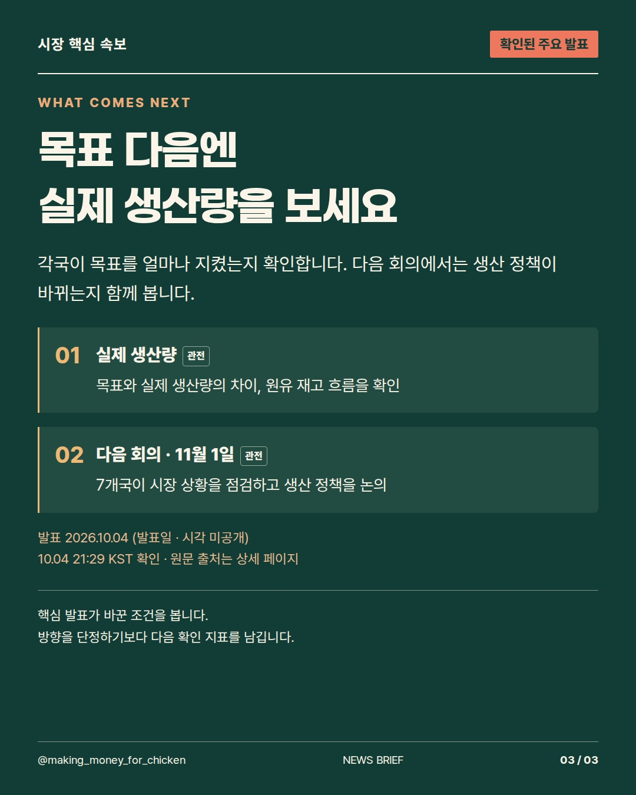

2026-10-04T12:29:41+00:00 확인 기준 · 발표 사실과 시장에 대한 해석을 구분합니다.
OPEC+ 7개국이 11월 생산 목표를 유지하면, 실제 원유 공급도 그대로일까요? 10월 4일 공식 결정과 업종별 영향 경로, 다음에 확인할 생산량·회의 일정을 3장으로 정리했습니다. #OPEC #국제유가 #시장뉴스



사실·해석·관전 포인트를 구분한 정보 콘텐츠. 투자 참고용 · 매수·매도 권유 아님.